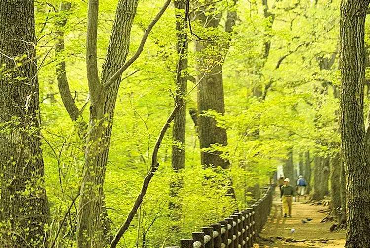

Fussa, Tokyo: things to do, food and stays
Fussa · Tokyo
Fussa
Highlighted on the Tokyo map.

Sights
Dining
Kappa 64
カッパ64

Noodle restaurant in Fussa, Tokyo.
Chuka Soba Men to Soup
中華蕎麦 麺とスープ

Noodle restaurant in Fussa, Tokyo.
Haiden. Cocco FACTORY La-men Riri
ハイデン.コッコFACTORY ら-めん凛々

Noodle restaurant in Fussa, Tokyo.
Hoop

Cafe in Fussa, Tokyo.
DEMODE DINER Fussa ten
デモデダイナー 福生店

Izakaya or bar in Fussa, Tokyo.
Ippatsu Ramen Fussa ten
壱発ラーメン 福生店

Noodle restaurant in Fussa, Tokyo.
Fussa no Beer Goya
福生のビール小屋

European restaurant in Fussa, Tokyo.
Bangkok Yatai Ryori Kaomangai 16 gou
カオマンガイ 16号

Cafe in Fussa, Tokyo.
Steuben Otama
シュトゥーベン・オータマ

European restaurant in Fussa, Tokyo.
Pizza & Italian Restaurant NICOLA
Pizza＆イタリアンレストラン NICOLA

European restaurant in Fussa, Tokyo.
DEMODE HEAVEN Fussa ten Reservation
デモデヘブン 福生店

Izakaya or bar in Fussa, Tokyo.
Inui
いぬい

Noodle restaurant in Fussa, Tokyo.
Ajishokudo Hikitaya
味食道 引田屋

Japanese restaurant in Fussa, Tokyo.
Motto Anata no Soba ni Shikoan Reservation
もっとあなたの蕎麦に 志向庵

Noodle restaurant in Fussa, Tokyo.
Ichiyo Raifuku Fussa Ten
一陽来福 福生店

Noodle restaurant in Fussa, Tokyo.
Nira Manju Fussa ten
韮菜万頭 福生店

Noodle restaurant in Fussa, Tokyo.
Menya Tamura
麺や 田むら

Noodle restaurant in Fussa, Tokyo.
Noka No Itarian Santen'Ichiyon
農家のイタリアン サンテンイチヨン

European restaurant in Fussa, Tokyo.
Kikyo
喜郷

Noodle restaurant in Fussa, Tokyo.
CHACO’S Fussa Reservation
CHACO’S 福生

Meat restaurant in Fussa, Tokyo.
Fukumi Ramen
福実ラーメン

Noodle restaurant in Fussa, Tokyo.
Tsukemen Biton Fussa Hon
つけめん 美豚 福生本店

Noodle restaurant in Fussa, Tokyo.
Cafe Du Jardin Honten
カフェ ドゥ ジャルダン 本店

Cafe in Fussa, Tokyo.
Una Sen
うな扇

Seafood restaurant in Fussa, Tokyo.
PISOLA Fussa ten
PISOLA 福生店

European restaurant in Fussa, Tokyo.
Ogawaya Fussa ten
おがわや 福生店

Noodle restaurant in Fussa, Tokyo.
Polo Haru
ポロ春

Noodle restaurant in Fussa, Tokyo.
Shokudo Ishikawa
食道 いし川

Seafood restaurant in Fussa, Tokyo.
Ramen Gantetsu
麺屋 頑徹

Noodle restaurant in Fussa, Tokyo.
Setto Goo
セットグー

European restaurant in Fussa, Tokyo.
The MINT MOTEL
ザ ミント モーテル

Cafe in Fussa, Tokyo.
Shijukara Cafe
四十雀カフェ

Cafe in Fussa, Tokyo.
Shochan
しょうちゃん

Meat restaurant in Fussa, Tokyo.
seasonal kitchen Umikaji
seasonal kitchen うみかじ

Izakaya or bar in Fussa, Tokyo.
Rinka
琳家

Noodle restaurant in Fussa, Tokyo.
Horaku En
豊楽園

Chinese or Asian restaurant in Fussa, Tokyo.